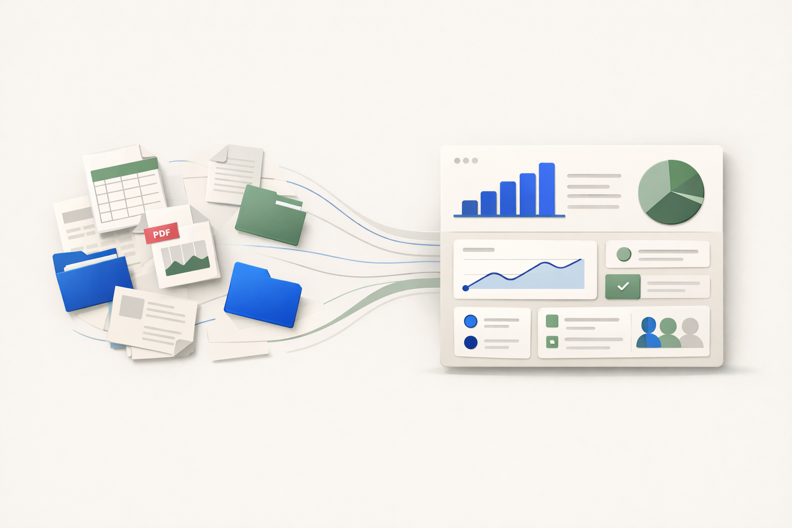
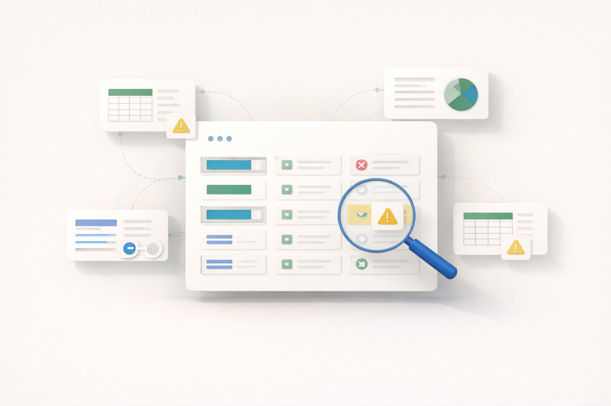
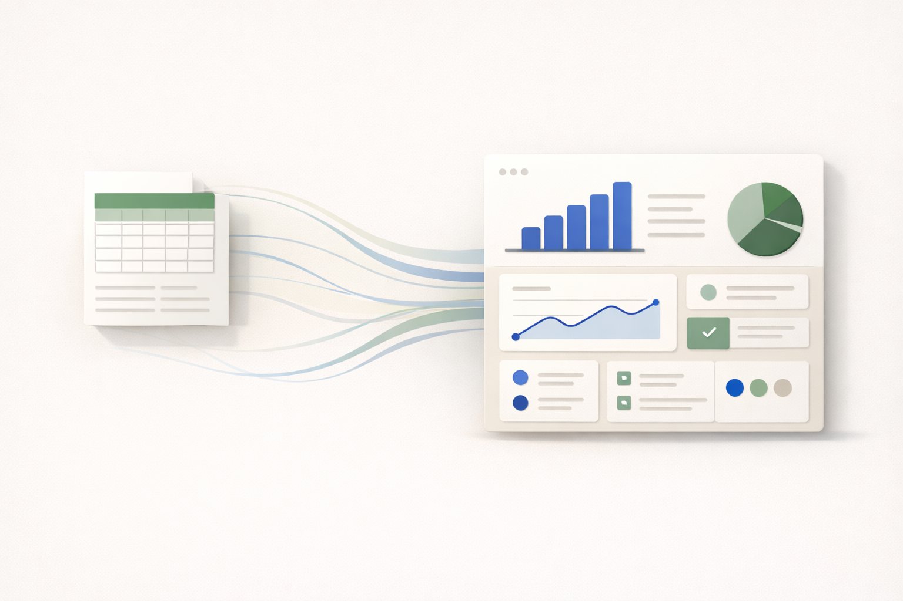
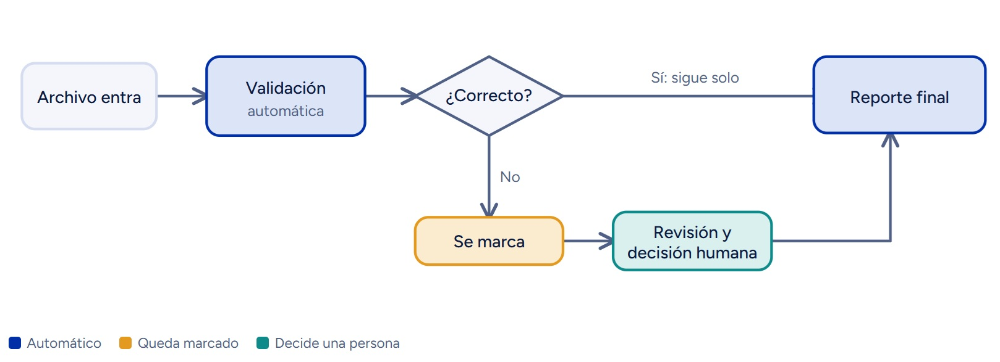

Ordenamos tus archivos
Excel, PDF y otros documentos, organizados en un solo lugar.
5 planillas → 1 vistaAutomatizamos tareas repetitivas y validamos tus datos, partiendo de tus archivos y tu forma de trabajar. Las decisiones siguen siendo de tu equipo.
Partimos de tu proceso realPrimero entendemos cómo trabajas hoy.
Usamos tus archivosExcel, PDF y lo que ya tienes. Sin empezar de cero.
Tú sigues decidiendoLa tecnología apoya, no reemplaza tu criterio.
RetrabajoSe revisa lo mismo varias veces.
Errores manualesCampos vacíos y datos mal ingresados.
Poca trazabilidadNadie sabe en qué paso va cada caso.
Personas claveSi no están, el proceso se traba.
Tomamos tareas manuales y las volvemos más rápidas, ordenadas y confiables.

Excel, PDF y otros documentos, organizados en un solo lugar.
5 planillas → 1 vistaJuntamos archivos y detectamos diferencias sin hacerlo a mano.
Cruce manual → diferencias marcadas
Marcamos datos incorrectos o incompletos automáticamente.
Fila por fila → alertas
Informes y resúmenes listos para usar.
Armar informe → descargarLo repetitivo se automatiza; lo importante lo revisa una persona.
Casos dudosos → a tu bandejaMapeamos tu proceso y vemos dónde se pierde tiempo.
Qué recibesAutomatizamos lo repetitivo y dejamos lo dudoso a una persona.
Qué recibesFormularios y aplicaciones internas hechas para tu flujo.
Qué recibesUn ejemplo de validación de documentos: cada caso toma el camino que corresponde.

Validación de una planilla de solicitudes, en tres pasos.
Ejemplo ilustrativo con datos ficticios.
Llevo más de 15 años trabajando en procesos, más de 10 de ellos en el sector bancario, donde el manejo riguroso de la información es parte del día a día. En los últimos años me he especializado en automatización y desarrollo de soluciones digitales.
Fundé EuTek para que las empresas dejen atrás las tareas manuales y las planillas dispersas, con soluciones simples que se adaptan a cómo ya trabajan.
Cuido la confidencialidad de tus datos: uso solo la información necesaria y construyo cada solución con criterios de seguridad, trazabilidad y control.
Depende del proceso. Después del diagnóstico recibes un plazo estimado por etapa.
Después de una conversación de 20 minutos, sin costo, te enviamos una propuesta con precio fijo para el diagnóstico y su plazo. Si luego decides avanzar con el proyecto, el monto del diagnóstico se descuenta íntegro. Así no pagas dos veces por entender tu proceso.
No. Trabajamos sobre tus archivos y herramientas actuales.
Se usan solo para el proyecto, con confidencialidad. Enlace a política de privacidad (pendiente).
Te respondemos en menos de 24 horas hábiles y agendamos una reunión.